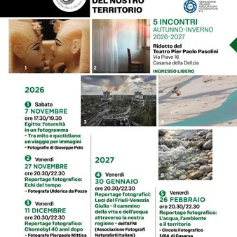

da sab 7 nov a ven 26 feb
Una Serata con un Fotografo del Nostro Territorio: 5 Incontri Fotografici
La grande fotografia d’autore torna protagonista a Casarsa della Delizia. La Pro Loco Casarsa della Delizia, in collaborazione con il Circolo Fotografico f/64 (affiliato FIAF), presenta la rassegna culturale “Una Serata con un Fotografo del Nostro Territorio”. Un ciclo di 5…
 Indicazioni
Indicazioni
- Costi e prenotazioni
- Costo non indicato · Prenotazione non indicata
- Programma
- Programma da verificare. Apri la fonte ufficiale per orari e possibili aggiornamenti.
- In caso di maltempo
- Nessuna indicazione specifica pubblicata.
- Note
- Acquisito automaticamente dalla fonte.
L’EVENTO
Descrizione completa
La grande fotografia d’autore torna protagonista a Casarsa della Delizia. La Pro Loco Casarsa della Delizia, in collaborazione con il Circolo Fotografico f/64 (affiliato FIAF), presenta la rassegna culturale “Una Serata con un Fotografo del Nostro Territorio”.
Un ciclo di 5 appuntamenti gratuiti, pensati per tutti gli appassionati di fotografia, reportage di viaggio, natura e storia locale.
1. Sabato 7 Novembre 2026 | Ore 17:30 – 19:30 Titolo: Egitto: l’eternità in un fotogramma – Tra mito e quotidiano: un viaggio per immagini Relatore: Giuseppe Polo Tema: Un viaggio visivo ed emozionale nel cuore dell’Egitto, tra fascino millenario, storia e scene di vita quotidiana catturate dall’obiettivo di Giuseppe Polo. 2. Venerdì 27 Novembre 2026 | Ore 20:30 – 22:30 Titolo: Reportage fotografico: Echi del tempo Relatrice: Ulderica Da Pozzo Tema: La nota fotografa friulana Ulderica Da Pozzo guida il pubblico in un viaggio della memoria attraverso immagini evocative che raccontano il passaggio del tempo e l’identità dei luoghi. 3. Venerdì 11 Dicembre 2026 | Ore 20:30 – 22:30 Titolo: Reportage fotografico: Chernobyl 40 anni dopo Relatore: Pierpaolo Mittica Tema: Una testimonianza visiva di forte impatto storico ed umano curata dal fotoreporter Pierpaolo Mittica, che documenta l’area di Chernobyl a quattro decenni dal disastro nucleare. 4. Venerdì 30 Gennaio 2027 | Ore 20:30 – 22:30 Titolo: Reportage fotografici: Luci del Friuli-Venezia Giulia – Il cammino della vita e dell’acqua attraverso la nostra regione Relatori: AFNI (Associazione Fotografi Naturalisti Italiani) Tema: Un omaggio alla biodiversità e ai paesaggi del Friuli-Venezia Giulia, incentrato sul ruolo fondamentale dell’acqua e degli ecosistemi regionali. 5. Venerdì 26 Febbraio 2027 | Ore 20:30 – 22:30 Titolo: Reportage fotografico: L’acqua, l’ambiente e il territorio Relatori: Circolo Fotografico f/64 di Casarsa Tema: La serata conclusiva vedrà protagonisti i soci del Circolo Fotografico f/64 con un lavoro corale dedicato alla valorizzazione del territorio locale e dell’ambiente.
Ingresso libero
Informazioni:
Tel. 0434 871031 - 338 7874972 E-mail: segreteria@procasarsa.org / procasarsa@pec.unplifvg.it
IL PROGRAMMA
Programma e orari
Appuntamenti raccolti dalle fonti elencate. Dove manca un orario, non è ancora disponibile in questa scheda.
Programma pubblicato
- Dal 2026-11-07 al 2027-02-26
INFORMAZIONI UTILI
Prima di partire
- Controllare la fonte prima di partire.
ORGANIZZAZIONE